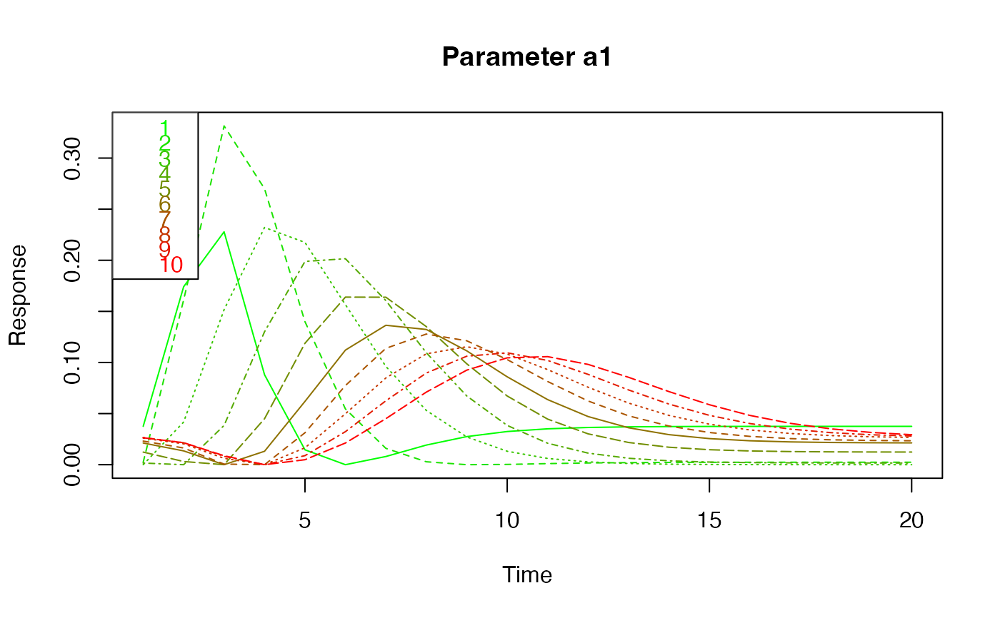
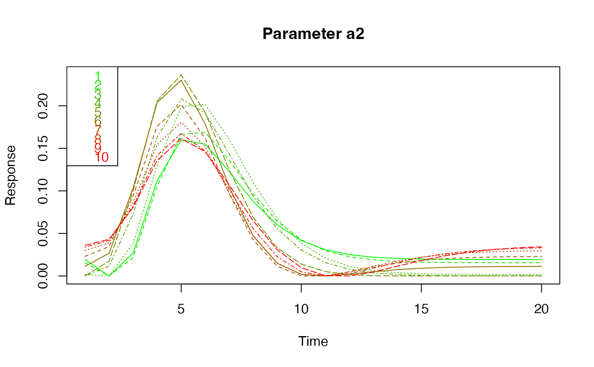
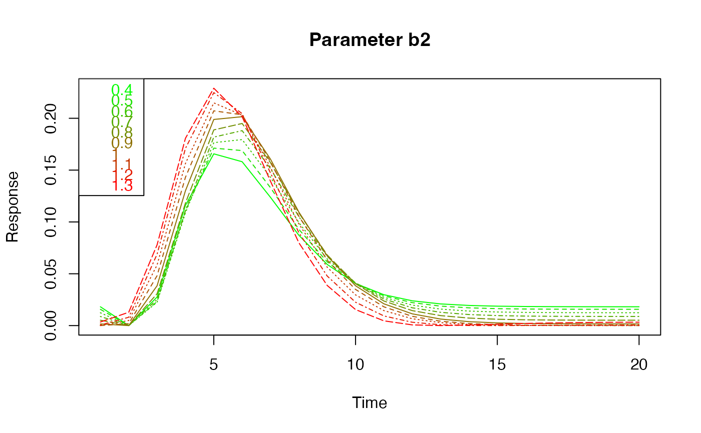

Linear Model for FMRI Data
Create the expected BOLD response for a given task indicator function. Borrowed from the fmri package.
hemodynamicRF(scans = 1, onsets = c(1), durations = c(1), rt = 3, times = NULL, mean = TRUE, a1 = 6, a2 = 12, b1 = 0.9, b2 = 0.9, cc = 0.35)
Arguments
| scans | number of scans |
|---|---|
| onsets | vector of onset times (in scans) |
| durations | vector of duration of ON stimulus in scans or seconds (if
|
| rt | time between scans in seconds (TR) |
| times | onset times in seconds. If present |
| mean | logical. if TRUE the mean is substracted from the resulting vector |
| a1 | parameter of the hemodynamic response function (see details) |
| a2 | parameter of the hemodynamic response function (see details) |
| b1 | parameter of the hemodynamic response function (see details) |
| b2 | parameter of the hemodynamic response function (see details) |
| cc | parameter of the hemodynamic response function (see details) |
Value
Vector with dimension c(scans, 1).
Details
The functions calculates the expected BOLD response for the task indicator function given by the argument as a convolution with the hemodynamic response function. The latter is modelled by the difference between two gamma functions as given in the reference (with the defaults for a1, a2, b1, b2, cc given therein): $$\left(\frac{t}{d_1}\right)^{a_1} \exp \left(-\frac{t-d_1}{b_1}\right) $$$$- c \left(\frac{t}{d_2}\right)^{a_2} \exp $$$$\left(-\frac{t-d_2}{b_2}\right) $$
The parameters of this function can be changed through the arguments
a1, a2, b1, b2, cc.
The dimension of the function value is set to c(scans,1).
If !is.null(times) durations are specified in seconds.
If mean is TRUE (default) the resulting vector is corrected to have
zero mean.
References
Worsley, K.J., Liao, C., Aston, J., Petre, V., Duncan, G.H., Morales, F., Evans, A.C. (2002). A general statistical analysis for fMRI data. NeuroImage, 15:1-15.
Polzehl, J. and Tabelow, K. (2007) fmri: A Package for Analyzing fmri Data, R News, 7:13-17 .
Examples
# Example 1 hrf <- hemodynamicRF(107, c(18, 48, 78), 15, 2) # Example 2: effect of varying parameter cc cc<-round(seq(0,1,length.out=10),2) nlev<-length(cc) cscale<-rgb(seq(0,1,length.out=nlev),seq(1,0,length.out=nlev),0,1) mat<-matrix(NA,nrow=nlev,ncol=20) for (i in 1:nlev) { hrf<-ts( hemodynamicRF(scans=20, onsets=1, durations=2, rt=1,cc=cc[i],a1=4,a2=3)) mat[i,]<-hrf } matplot(seq(1,20),t(mat),'l',lwd=1,col=cscale,xlab='Time',ylab='Response',main='Parameter cc')legend(x='topleft',legend=cc,text.col=cscale)# Example 3: effect of varying parameter a1 a1<-seq(1,10) nlev<-length(a1) cscale<-rgb(seq(0,1,length.out=nlev),seq(1,0,length.out=nlev),0,1) mat<-matrix(NA,nrow=nlev,ncol=20) for (i in 1:nlev) { hrf<-ts( hemodynamicRF(scans=20, onsets=1, durations=2, rt=1,a1=a1[i],a2=3)) mat[i,]<-hrf } matplot(seq(1,20),t(mat),'l',lwd=1,col=cscale,xlab='Time',ylab='Response',main='Parameter a1')legend(x='topleft',legend=a1,text.col=cscale)# Example 4: effect of varying parameter a2 a2<-seq(1,10) nlev<-length(a2) cscale<-rgb(seq(0,1,length.out=nlev),seq(1,0,length.out=nlev),0,1) mat<-matrix(NA,nrow=nlev,ncol=20) for (i in 1:nlev) { hrf<-ts( hemodynamicRF(scans=20, onsets=1, durations=2, rt=1,a1=4,a2=a2[i])) mat[i,]<-hrf } matplot(seq(1,20),t(mat),'l',lwd=1,col=cscale,xlab='Time',ylab='Response',main='Parameter a2')legend(x='topleft',legend=a2,text.col=cscale)# Example 5: effect of varying parameter b1 b1<-seq(0.4,1.3,by=0.1) nlev<-length(b1) cscale<-rgb(seq(0,1,length.out=nlev),seq(1,0,length.out=nlev),0,1) mat<-matrix(NA,nrow=nlev,ncol=20) for (i in 1:nlev) { hrf<-ts( hemodynamicRF(scans=20, onsets=1, durations=2, rt=1,a1=4,a2=3, b1=b1[i])) mat[i,]<-hrf } matplot(seq(1,20),t(mat),'l',lwd=1,col=cscale,xlab='Time',ylab='Response',main='Parameter b1')legend(x='topleft',legend=b1,text.col=cscale)# Example 6: effect of varying parameter b2 b2<-seq(0.4,1.3,by=0.1) nlev<-length(b2) cscale<-rgb(seq(0,1,length.out=nlev),seq(1,0,length.out=nlev),0,1) mat<-matrix(NA,nrow=nlev,ncol=20) for (i in 1:nlev) { hrf<-ts( hemodynamicRF(scans=20, onsets=1, durations=2, rt=1,a1=4,a2=3, b2=b2[i])) mat[i,]<-hrf } matplot(seq(1,20),t(mat),'l',lwd=1,col=cscale,xlab='Time',ylab='Response',main='Parameter b2')legend(x='topleft',legend=b2,text.col=cscale)